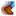
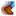

Geschwindigkeit
Geschwindigkeit ist ein Wert, der sich darauf bezieht, wie schnell der Spieler seine Waffe bewegt.  Waffengeschwindigkeit und  Spielergeschwindigkeit sind zwei getrennte Werte, die beide auf verschiedene Weise beeinflusst werden können.
Waffengeschwindigkeit und  Spielergeschwindigkeit sind zwei getrennte Werte, die beide auf verschiedene Weise beeinflusst werden können.
 Waffengeschwindigkeit
Waffengeschwindigkeit
Waffen
Die folgenden Waffen sind schneller oder langsamer als der Durchschnitt.
| Bild | Name | Level | Beschreibung | Schaden | Statistiken | Ort | Kaufpreis | Verkaufspreis |
|---|---|---|---|---|---|---|---|---|
| Stahl-Kurzschwert | 2 | Eine gewöhnliche Metallklinge. | 04-08 | Schatztruhe in den Minen auf Ebene 20. | ||||
| Piratenschwert | 4 | Sieht so aus, als hätte ein Pirat es einst besessen. | 08-14 | Nach Ebene 20 der Minen. Bei der Abenteurergilde nach Ebene 30 kaufbar. | ||||
| Entermesser | 4 | Eine geschickt hergestellte Klinge. | 09-17 | Kaufbar bei der Abenteurerilde ab Ebene 25 der Minen. | ||||
| Waldschwert | 5 | Wurde durch Waldmagie mächtig gemacht. | 08-18 | Seltener Drop zwischen Ebene 20 und 60 der Minen. | ||||
| Insektenkopf | 6 | Nicht gerade angenehm zu schwingen. | 10-20 | Seltener Drop von Käfern. Belohnung für die Tötung von 125 Käfern. | ||||
| Eiserne Klinge | 4 | Ein schweres Breitschwert. | 12-25 | Ab Ebene 40 und tiefer in den Minen. | ||||
| Rapier | 6 | Eine elegante Klinge. | 15-25 | |||||
| Flamberge | 6 | Es ist sehr schwer. | 20-32 | Kaufbar bei der Abenteurergilder ab Ebene 45 der Minen. | ||||
| Neptuns Gleve | 7 | Ein Erbstück von jenseits des Gemsees. | 18-35 | Seltener Angel-Drop. Vor allem wo es blubbert. Auch in Schatzkisten beim Fischen (Fluss/Ozean/Bergsee/?). | ||||
| Obsidian-Schneide | 9 | Es ist unglaublich scharf. | 30-45 | Kiste auf Ebene 90 der Minen. | ||||
| Knochenschwert | 10 | Ein sehr leichtes Stück geschärfter Knochen. | 20-30 | Kaufbar bei der Abenteurergilde ab Ebene 75 der Minen. | ||||
| Stahl-Falchion | 14 | Leicht und stark. | 26-38 | Kaufbar bei der Abenteurergilde ab Ebene 90 der Minen. | ||||
| Galaxie-Schwert | 26 | Es ist anders als alles, was du je gesehen hast. | 60-80 | Bringe eine Prismatische Scherbe zu den Drei Säulen in der Wüste. Halte die Scherbe (nur eine!) und betrete das Feld in der Mitte der Säulen. | ||||
| Temperiertes Korbschwert | 8 | Es sieht aus, als könne es allem widerstehen. | 29-44 |
Ringe
Die folgenden Ringe erhöhen die Waffengeschwindigkeit:
| Bild | Name | Beschreibung | Ort | Kaufpreis | Verkaufspreis |
|---|---|---|---|---|---|
| Smaragd-Ring | Erhöht Waffengeschwindigkeit um 10%. | Kaufbar bei der Abenteurergilde ab Ebene 40 der Minen. |
 Spielergeschwindigkeit
Spielergeschwindigkeit
Essen
Die folgenden Nahrungsmittel erhöhen die Spielergeschwindigkeit. Kaffee kann in der Kneipe zum Sternenfall für  300 G gekauft werden, die anderen erscheinen aber nur zufällig auf Gus' Speisekarte.
300 G gekauft werden, die anderen erscheinen aber nur zufällig auf Gus' Speisekarte.
Merke: Ein einzelner Buff für Bewegungsgeschwindigkeit scheint eine Steigerung von +17% zu geben, der sich beim Reiten mit der Geschwindigkeit des Pferdes zusammenrechnet, was die Bewegungsgeschwindigkeit auf sage und schreibe +47% bringt.
| Bild | Name | Beschreibung | Zutaten | Energie / Gesundheit | Buff(s) | Buffdauer | Rezeptquelle | Verkaufspreis | |||
|---|---|---|---|---|---|---|---|---|---|---|---|
| Magischer Bonbon | Ein seltenes und kraftvolles Bonbon, das mit der Essenz des prismatischen Splitters angereichert ist. | N/A | N/A - Muss gekauft werden, verdient werden oder kann von Spukenden Schädeln fallen gelassen werden | ||||||||
| Kaffee | Riecht lecker. Gibt dir sicher einen Schub. | Kneipe zum Sternenfall Herstellung im Fass |
|||||||||
| Krabbenkuchen | Krabbe, Brotkrümel und Eier, die zu einer Frikadelle geformt und dann goldbraun gebraten werden. |
|
|||||||||
| Paprika-Popper | Würzige, panierte Paprika mit Käse gefüllt. |
|
|||||||||
| Würziger Aal | Er ist richtig scharf! Sei vorsichtig. |
|
|||||||||
| Super-Mahlzeit | Eine perfekte energiespendende Mahlzeit. |
|
|||||||||
| Dreifacher Espresso | Er ist stärker als normaler Kaffee! |
Buffs
Die folgenden Buffs verringern die Spielergeschwindigkeit.
| Bilder | Name | Effekt | Ursache | Dauer |
|---|---|---|---|---|

|
Beschwipst | Konsumieren von Alkohol (Bier, Met, Hellem Bier oder Wein) | ||

|
Zugeschleimt | Von Schleim getroffen werden. |
| Fähigkeiten & Werte | |
|---|---|
| Fähigkeiten | Hofarbeit • Minenarbeit • Sammeln • Fischen • Kampf |
| Werte | Angriff • Geschwindigkeit • Gewicht • Glück • Immunität • Kritische Chance • Kritische Kraft • Magnetismus • Verteidigung |